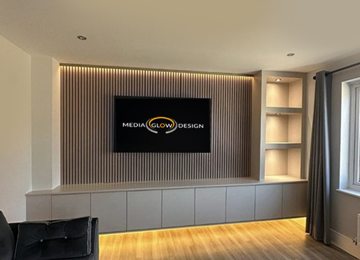
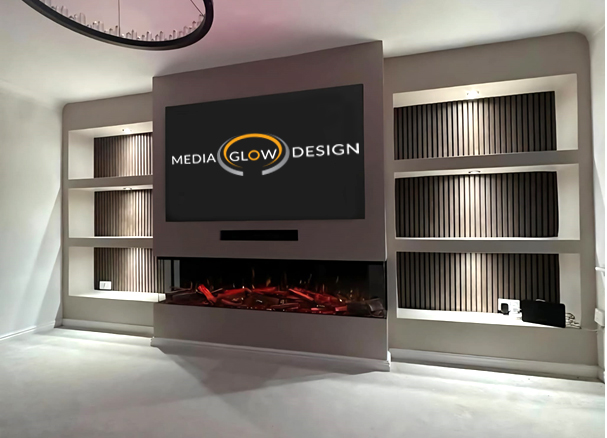

Нашите проекти

Медийна стена

Медийна стена със камина

Медийна стена със 3д камина
Медийни стени и камини с модерен дизайн
НАУЧЕТЕ ПОВЕЧЕМедия Глоу Дизайн е студио, специализирано в проектиране и изграждане на модерни медия стени с вградени камини. Работим индивидуално с всеки клиент — от първата идея до финалния детайл — за да създадем пространство, което съчетава функционалност, уют и висок клас дизайн.
Свържете се с нас, за да превърнем всекидневната ви в място за стил, комфорт и кино изживяване у дома.
Създаване на уникални медия стени по поръчка.
Професионален монтаж и изработка.
Съвременни решения за вашия интериор.
Медийна стена
Медийна стена със камина
Медийна стена със 3д камина
Свържете се с нас на: info@mediaglow.com